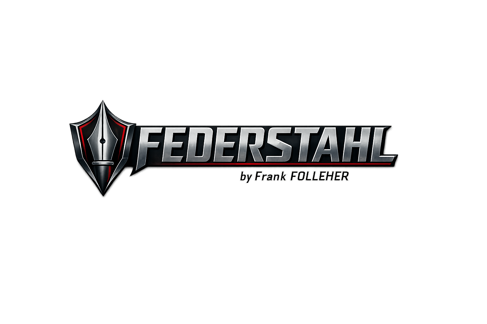

Offizielles Werkzeug
LRC-Synchronisierer
Lokales Werkzeug zum Importieren von Liedtexten, Setzen von Zeitmarken und Exportieren fertiger LRC-Dateien – ohne Upload, ohne KI und ohne unnötigen Ballast.
Im FEDERSTAHL-Look, aber schlank und praxisnah.
lokal im Browser
TXT- & LRC-Import
gezielte Korrektur
schneller Export
Enter Marke setzen
Leertaste Play / Pause
Backspace letzte Marke löschen
K Pause + löschen + 3 s zurück
R 2 s zurück
←/→ letzte Marke korrigieren
So funktioniert es: Audio und Songtext laden, Wiedergabe starten und bei jedem tatsächlichen Zeilenanfang Enter drücken. Fehler können danach korrigiert werden, ohne wieder komplett von vorn beginnen zu müssen.
1 Songdaten
2 Songtext importieren
TXT und LRC werden unterstützt. Vorhandene LRC-Zeitmarken werden mitgeladen. Leerzeilen werden ignoriert.
3 Audio laden und synchronisieren
00:00.00
Globale Korrektur beim Export:
ms
Der erste Knopf hält an, entfernt die letzte Marke und springt drei Sekunden vor deren Position zurück.
Unten eine bereits markierte Zeile anklicken. Nur diese und alle späteren Zeitmarken werden entfernt.
Jetzt markieren
Zuerst Songtext übernehmen und Audio auswählen.
Danach
Markiert0
Gesamt0
Verbleibend0
4 Speichern und exportieren
Der Zwischenstand wird nur lokal im Browser gespeichert. Die Audiodatei muss nach einem erneuten Öffnen wieder ausgewählt werden.
| # | Zeit | Text |
|---|